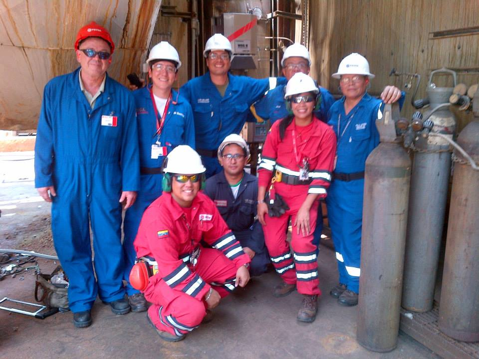

Jorge Gamboa
Data Analytics enthusiast. Environmental Analyzer Engineer. Marathon runner. Amateur Crossfit Athlete.
Catalog
These are my favorite projects
- Digital Twin for an Oxygen Analyzer in a Delayed Coker Unit (link for project in Kaggle)
This interesting project aimed to create a "Digital Twin" for an oxygen analyzer in the furnace of a delayed coker unit in a crude oil upgrader.
This analyzer is crucial for controlling the combustion of the furnace and monitoring emissions in the flue gas.
Due to the extreme conditions in the environment, these analyzers require frequent shutdowns for maintenance.
Therefore, we wanted to create a model capable of predicting oxygen concentration through other measurements of available instrumentation, such as temperatures,
pressures and flows.

The proposed model is a Multilayer Perceptron Regressor and its performance is evaluated.
Among the main challenges of this project was the low availability of samples and the high dimensionality,
so the K-Fold Cross-Validation and Principal Component Analysis technique was used to reduce the dimensionality without losing relevant information.
Don't hesitate to contact me or connect via Linkedin.

 Caracas, VE
Caracas, VE